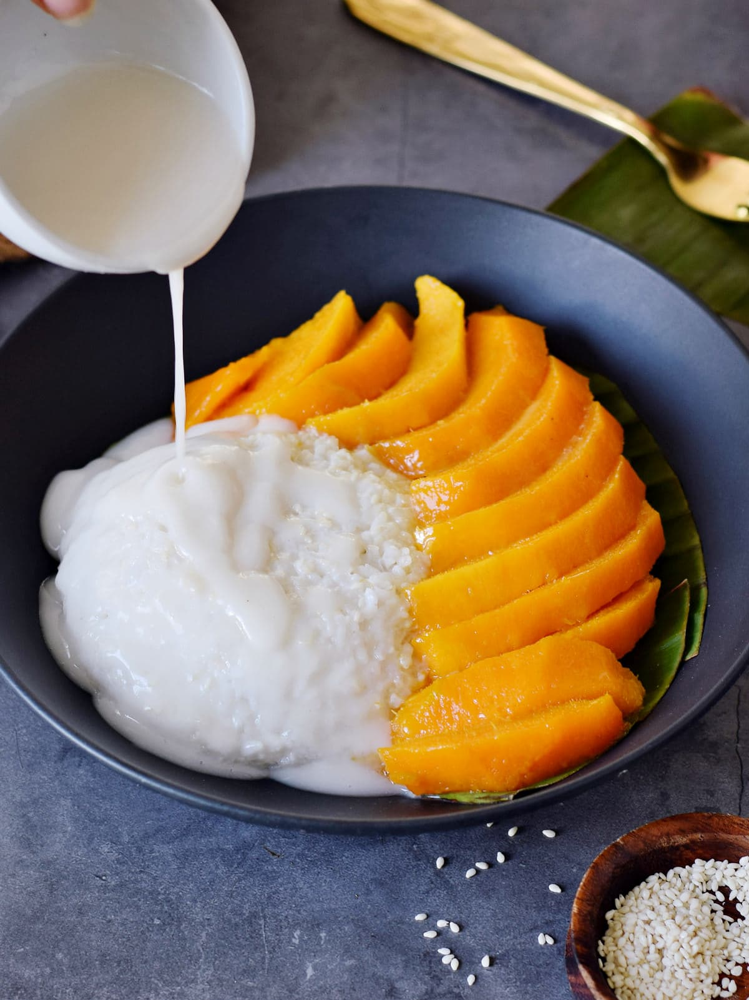

My Favorite desserts!
Mango Sticky Rice
Cook Time 25min. Prep Time
10min. Total Time 35min.
Serves 4

Ingredients
- 2-3 fresh mangoes
- 1 cup glutinous/sweet rice
- 1 cup coconut milk
- 1 tbsp coconut milk
- 1/4 cup sugar
- 1/4 tsp salt
- 1/2 tsp corn starch
- 1/2 tsp sesame seeds
Instructions
-
Soak glutinous/sweet rice for 2 hours, or up to overnight.
Drain water when ready.
-
Using a steamer, steam sticky rice for 20-30 minutes.
Check on the 20 minute mark. If rice is soft and not hard in
the middle, it is done.
-
If you do not have a steamer, shape aluminum foil into three
equal size balls. Fill pot with water (see Note 1) and place
the aluminum balls on the pot.
-
Place a metal bowl/plate (or a plate that can withstand the hot
steam) on the aluminum balls. Add drained rice to the bowl/
plate.
-
Bring pot to boil, and once it boils, cover pot, and cook for
20-30 minutes. Check on the 20 minute mark. If rice is soft and
not hard in the middle, it is done.
-
While waiting for rice to cook, slice mangoes.
-
Prepare the sweet coconut sauce by bringing 1 cup of coconut
milk, sugar and salt to boil. Once it reaches a boil, bring 1/2
of the sauce into a small bowl and set aside.
-
Combine 1 tbsp of coconut milk and corn starch, then add that
into the pot to thicken the sweet coconut sauce. Boil for a few
minutes until sauce is thickened.
-
When rice is done, add the non-thickened sweet coconut sauce
(the sauce set aside on Step 7) to rice and mix well. Set
aside and let it cool for 15-20 minutes.
-
Once cool, place rice onto serving plate(s), pair with mangoes,
and drizzle the thickened sweet coconut sauce onto rice.
Garnish with sesame seeds.
-
Serve and enjoy!
Pecan Pie
Cook Time 50min. Prep Time
15min. Total Time 1hr 15min.
Serves 12

Ingredients
-
1 Homemade pie crust, , unbaked (my recipe makes 2 crusts,
so you can freeze the other crust)
- 1 cup granulated sugar
- 3 Tablespoons light brown sugar
- 1/2 teaspoon salt
- 1 cup light corn syrup
- 3/4 teaspoon vanilla extract
- 1/3 cup salted butter, , softened or melted
- 3 large eggs
-
1 1/2 cups pecan halves, (can chop the pecans or leave whole)
Instructions
-
Prepare my perfect pie crust recipe and place pie dough in a
deep dish pie plate. Refrigerate while you prepare the
pecan pie filling.
-
In a large bowl cream together sugar, brown sugar, salt,
corn syrup, and softened (or melted) butter. Mix in the
eggs and vanilla.
-
Reserve a few pecans and stir the rest into the batter. Pour
into unbaked pie shell. Add a few of the reserved pecans on top
of the pie in any empty spots, to make it look pretty. Use a
small spoon to cover them with batter.
-
Bake at 425 degrees for 10 minutes, then lower the oven temp to
350 degrees F and continue baking for about 50 minutes. Check
the pie half way through cooking and tent a large piece of
greased aluminum foil over the top of the pie. (I tent it high
so it doesn't touch the pie filling). You will know your pecan
pie is done when you can shake it gently and it is not overly
jiggly. If it jiggles a lot when shaking, continue cooking
until the center is more set, 5-10 more minutes, or longer if
needed. Err on the side of cooking it longer rather than
shorter to ensure that the middle has set.
-
Allow pie to cool completely for several hours before cutting
and serving. Or refrigerate for 1-3 days, until ready to serve.
-
Serve and enjoy!
Strawberry Cheesecake
Cook Time 55min. Prep Time
30min. Chill Time 6hr.
Total Time 7hr 25min.
Serves 12

Ingredients
Biscuit Base:
-
200g / 7oz Arnott’s Marie crackers or other plain biscuit (Aus)
or 28 Graham Cracker squares
- 120 g / 8 tbsp unsalted butter
Cheesecake Filling:
- 1 lb / 500g cream cheese
- 2 tbsp plain flour
- 1 tsp vanilla extract
- 1/2 cup sour cream
- 1 1/2 cups caster sugarsuperfine sugar
- Zest of 1 lemon
- 3 large eggs
Strawberry Topping:
- 500g / 1 lb strawberries
- 2 tbsp lemon juice OR water
- 1/2 cup white sugar
- 1/2 cup sour cream
- 1/2 tsp vanilla extract
- 1 1/2 tsp cornflour/cornstarch
- 2 tbsp water
Instructions
Preperation:
-
Preheat oven to 160C/320F (standard) or 140C/295F
(fan/convection)
-
Get a 20cm/8″ springform cake tin. Turn the base UPSIDE DOWN
(Note 4), butter lightly and place a square piece of
parchment/baking paper on the base. Then clip into
the springform pan.
-
Butter and line the side of the pan.
Cheesecake Biscuit Base:
-
Break up biscuits roughly by hand and place in a food processor.
-
Blitz until fine crumbs (Note 5). Add butter, briefly blitz
until dispersed and it resembles wet sand.
-
Pour into the prepared cake tin. Use a spatula to roughly
spread it out over the base and up the walls.
-
Use something with a flat base and vertical edges
(I used a measuring cup) to press the crumbs up the wall
almost to the top of the sides, and flatten the base.
Filling:
-
Use a mixer or beater to beat the cream cheese until just
smooth, no longer than 20 seconds on speed 4.
-
Add flour, beat for 5 seconds on speed 4 until
just incorporated.
-
Add vanilla, sour cream, sugar and lemon zest. Beat until
just combined (10 sec max, speed 5).
-
Add eggs one at a time, beat in between until just combined
(5 sec each), and after the last one, beat just until the
egg is fully incorporated.
-
Pour into prepared crust.
-
Bake for 55 minutes. The top should be a very light golden
brown, not cracked, and near perfectly flat. It should jiggle
slightly when you gently shake the pan.
-
Cool the cake in the oven with the door open 20 cm / 8″
(Note 6), then refrigerate for 4 hours+ in the pan.
-
Remove sides. Use overhang paper to slide cheesecake off the
cake pan. Then slide the cheesecake off the paper.
Srawberry Topping:
-
Place chopped strawberries, vanilla, sugar and lemon juices in
a saucepan. Stir then bring to simmer over medium heat.
-
Simmer for 10 minutes until strawberries breakdown.
-
Mix cornflour with water, then add into saucepan and stir.
-
Add halved strawberries and cook for 1 minute to soften.
-
Sauce should be syrupy – remove from stove and cool.
Will thicken as it cools.
-
Once cool, stirl. Adjust thickness to make it the right
“oozing” consistency (see video, Note 7) with a tiny touch
of water (be careful!).
-
Spoon onto cheesecake so it’s covered with a single layer of
strawberries. Flip strawberry halves so they are facedown.
Refrigerate 2 hours+.
-
Slice and serve with remaining Strawberry Sauce!